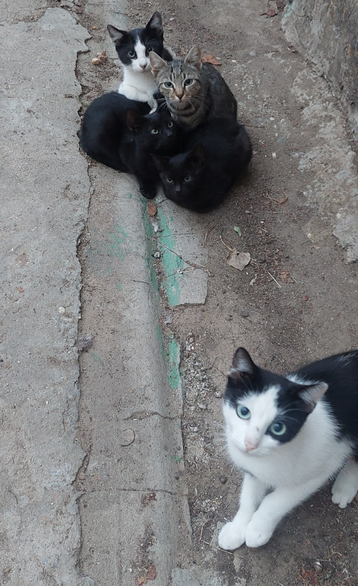

Asgard
Vaccinat, castrat, adoarme torcând și făcând cozonăcei în brațe sau în poală. Are nevoie de multă afecțiune.
Cei 4 mușchetari și mama lor
Patru pisicuți de circa 5 luni pentru adopție, frumoși și jucăuși, foarte prietenoși, așteaptă o casă nouă.
Formular de adopție